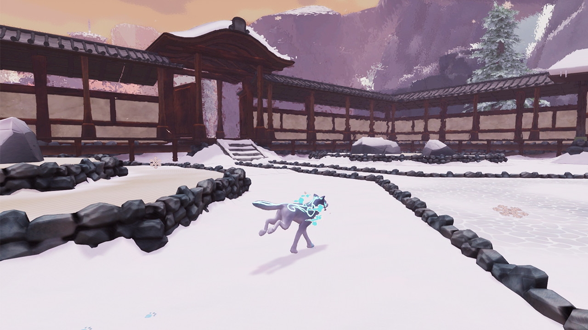
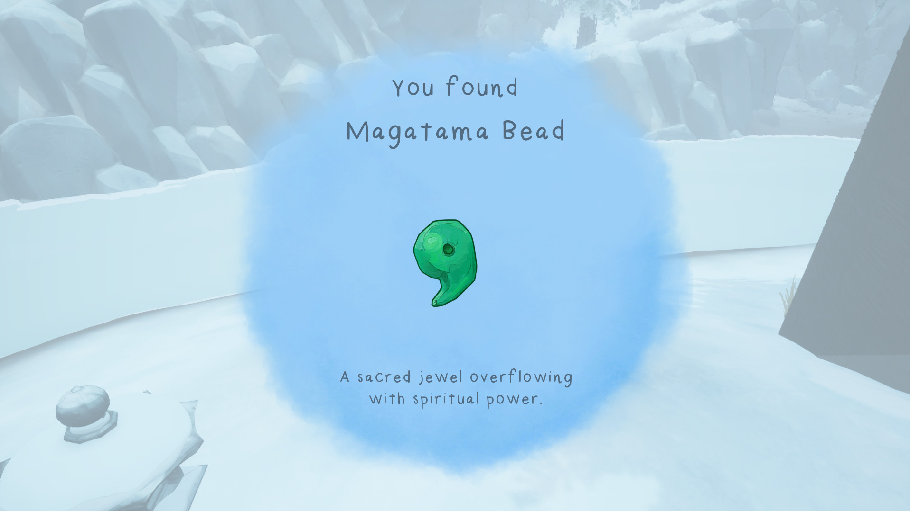

 I chose Path of Kami for my Analysis. The game has a painted effect for everything in a distance, making it look like a piece of art. The music, art style, and user interface all have a cohesive theme that makes you feel like you’re exploring the world in which Path of Kami takes place. After further research, I have not been able to find the name of the world where the entire area takes place, but I do know it’s based in Japan. Games that the game studio, Captilight, took inspiration from when creating Path of Kami are Okami, Abzu, Journey, and various Zelda games.
How simple or complex are the settings in the game? How far can you explore and what makes the settings distinctive?
I would say the settings are simple, however, after working with other indie games I can say that Path of Kami has more accessibility settings than the ones I’ve worked with in the past. However, they’re a little buggy when adjusting the screen resolution.
What kind(s) of character(s) are you invited to control? Are you invited to be multiple characters? Or just one character type?
In this game, you only play as Kazeyo. He is a Japanese wolf who recently passed away. He’s having to explore trails of the mortal and spirit world to find out where he belongs.
How do you get to know the character(s) you are playing? What details make them distinctive, quirky, memorable, etc?
You have a friend named Wisp who helps guide you through the game. They talk to you every so often when you get to specific locations in the game. Later in the game you find out that Wisp is Kazeyo's mom.
What kinds of interactions do you have with NPC characters?
Just about zero interactions from my playthrough. The only NPC in the demo is Wisp who talks to you at certain locations, otherwise, you can not interact with them.
How are you challenged as a game player in this game? What are you being asked to investigate, where do you get stuck, and how do you make progress in the game?

The challenge of this game is figuring out where to go since there is not a very clear indication. I stopped during the demo since I could not find the way and after looking into other reviews it seems that I am not alone.
What kinds of objects do you interact with in the game? Do you pick up written messages, do you ever need to consume food in the game, do you pick up functional things you need to get other things to work?

I can interact with core objects that are placed in the wolf's mouth. Those items have to be placed on a platform somewhere nearby. You can also interact with these weird rainbow items. I have no idea what they’re for since the game did not explain it. You can also interact with little fireplaces. When you add fire to them it will either move an object or make one appear. The last thing you can interact with is these little pools that become your spawn points in case you fall into a larger body of water.
Kumi - Path of Kami
Comment on the music and sounds in the game!
Speculate: How could this game develop in the future, or what would be an improvement the developers could make in the next stage?
If Captilight took Path of Kami back in development, then they could improve on making the story and gameplay more understandable. The only character that you interact with in the demo is Wisp and they do not give you too much information on what is going on. The developers want the players to assume and look deep into the objects to figure out the story, but it does not work well for this game. The game needs more dialogue, a better understanding of what the objects mean, and more NPCs to make the world come to life. The mechanics could use some work. The way Kazeyo jumps feels too floaty and stiff. Let the players know what key or button is used for the fire ability. It is unclear what the objectives of the game are. Having a map, indicator, or anything that could draw the player's attention could make the game more comprehensible. Players have to guess where objects need to go to continue the game. The background music loops but does so harshly. The music needs a smoother transition for it to feel pleasant. A few of the sound effects in the game do not feel like they belong to the item, updating those will help make the world feel more immersive. A lot of the objective and user problems could be solved with help tips. The puzzles need to be amped up. Currently, you carry an object from one place to another. All in all the game needs an upgrade if they want people to understand the story and have more people to view the game. I do love the world they built, but I just wish it haad a bit more love in some areas of the game.